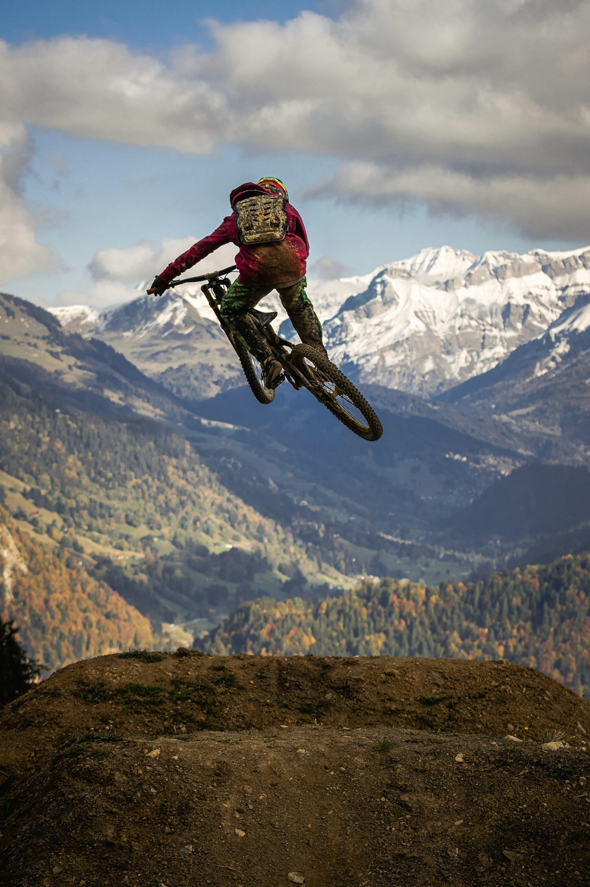
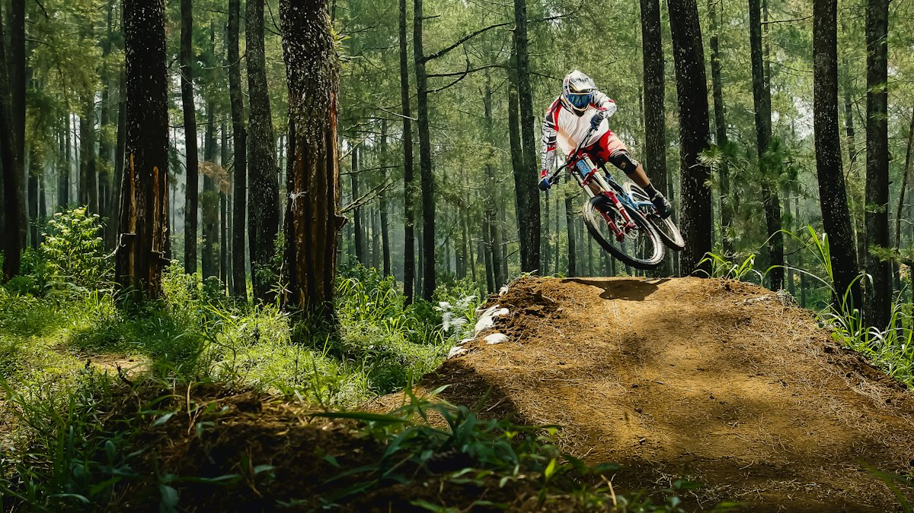

Cercate un tecnico che ogni giorno racconti anche l'officina su Instagram, Facebook e TikTok. Qui c'è il pezzo che il tecnico non deve fare da solo: la scheda di lavoro diventa video, didascalia e promemoria per il cliente.
Apri il banco di lavoroScegli il lavoro e il nome della bici. Il cartellino resta in officina, il reel e la didascalia vanno sul profilo: tre inquadrature col telefono, durante il lavoro, senza fermarsi.
Chi esce con la forcella revisionata oggi torna fra qualche mese, se qualcuno glielo ricorda. Ore in sella al mese e ultimo servizio: il messaggio parte quando serve.
Intervalli d'esempio (50 ore per il servizio base, 125 per la revisione completa). Per ogni modello vale il manuale del produttore.
Nove riquadri, tutti dal negozio: arrivi, prima e dopo, il giro del sabato. Il tecnico gira, noi montiamo, scriviamo e pubblichiamo.

Sentiero di casaDa dicembre a marzo si gira meno e si sistema di più. Un piano di quattro mesi per riempire il banco prima della primavera.
Buono regalo «tagliando di primavera», da mettere sotto l'albero. Post e storie fino al 24.
Promemoria a chi ha fatto un servizio la scorsa stagione. Settimana delle sospensioni.
E-MTB: diagnosi batteria e aggiornamenti. Prenotazioni a slot per evitare la coda di marzo.
Bici pronte per i primi giri. Ogni consegna diventa un prima e dopo sul profilo.